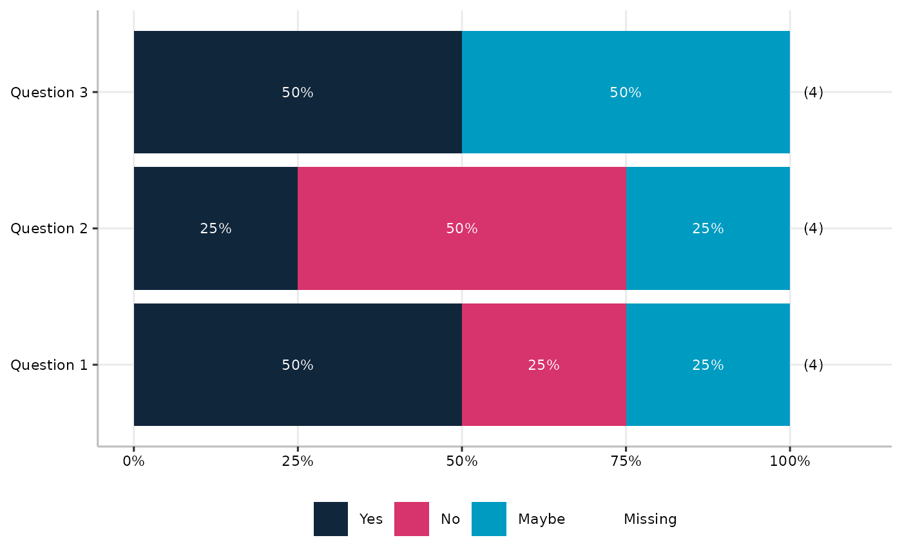

Make a stacked bar chart summarising many survey questions
plot_many_questions.RdMake a horizontal stacked bar chart to summarise several survey questions, with questions ordered according to the proportion of responses that fit a particular pattern.
Usage
plot_many_questions(
dat,
labels_vec,
percCut = 5,
colo = NULL,
order_values = NULL,
titleText = NULL
)Arguments
- dat
a tibble/data.frame, each variable corresponding to a question. All variables should be factors and all with the same possible values.
- labels_vec
a named vector of labels to use for the questions on the plot. Names are variable names and values are corresponding labels.
- percCut
numeric scalar (0-100). Cutoff below which percentages are not shown in bar segments. Default
5.- colo
(optional but recommended) vector of colours to use for the fill scale (character vector of colours, length the same as the number of levels of the factor that is the first variable of
dat.) IfNULL(default) the pallete fromOMESurvey::get_OME_colours(type='distinct')is used. Whenna.rm = FALSEa grey colour is prepended for the "No response" level. Note that percentage labels are in white, so the pallete needs to work with that. (... or this function needs upgrading!)- order_values
optional vector of question responses that determine the ordering of questions in the plot.
- titleText
text to use as plot title.
Value
A ggplot object (or a cowplot object if cowplot is installed) representing
a horizontal stacked bar chart summarising the survey questions.#'
Details
order_values specifies the responses which count for ordering the questions in the plot. e.g. c("Strongly agree", "Agree") will result in the questions being ordered according to the proportion of respondents who agree.
Note
All variables in dat should have identical factor levels.
The names of labels_vec must match the column names of dat.
Values in order_values must be valid levels of the response factor.
Legend placement
If the cowplot package is installed, the legend is extracted and placed
beneath the plot, centred horizontally. If cowplot is not available,
the legend remains in the default ggplot position.
Examples
# Minimal example with three questions and three response levels
dat <- tibble::tibble(
Q1 = factor(c("Yes", "No", "Yes", "Maybe")),
Q2 = factor(c("No", "No", "Yes", "Maybe")),
Q3 = factor(c("Maybe", "Yes", "Maybe", "Yes"))
)
labels <- c(Q1 = "Question 1", Q2 = "Question 2", Q3 = "Question 3")
plot_many_questions(dat, labels_vec = labels)
